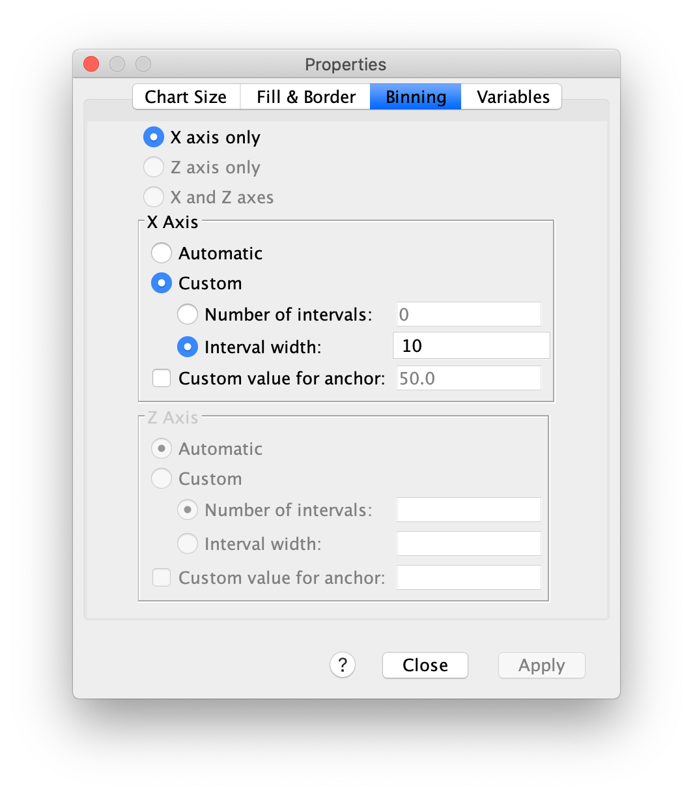
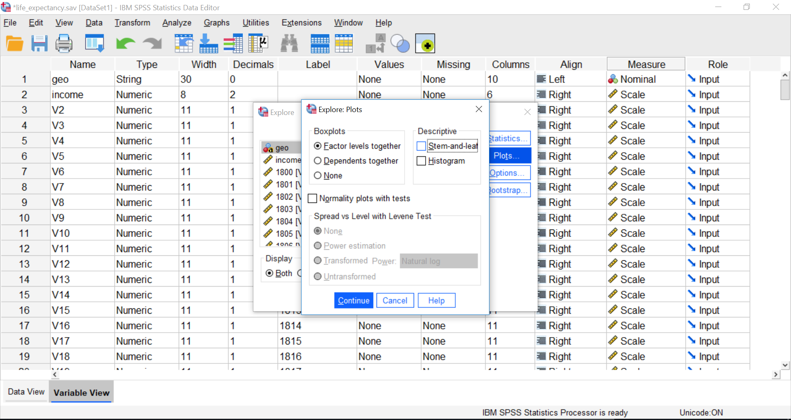
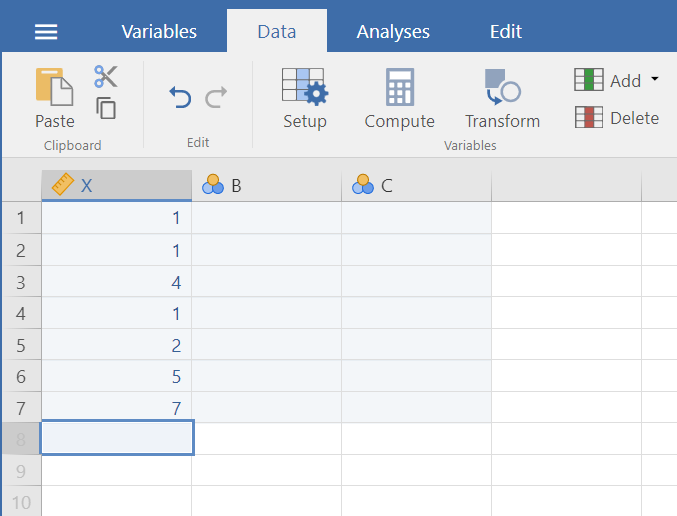
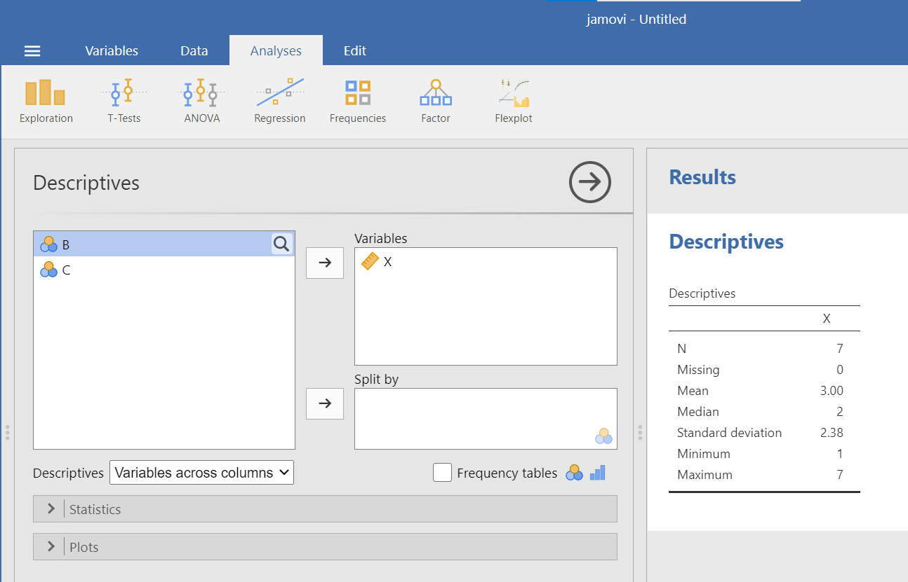

Chapter 2 Lab 2: Descriptive Statistics (and more graphs)
Describing comic sensibility is near impossible. It’s sort of an abstract silliness, that sometimes the joke isn’t the star. -Dana Carvey
The purpose of this lab is to show you how to compute basic descriptive statistics, including measures of central tendency (mean, mode, median) and variation (range, variance, standard deviation).
2.1 General Goals
- Compute measures of central tendency using software
- Compute measures of variation using software
- Ask some questions of a data set using descriptive statistics
2.1.1 Important info
We will be using data from the gapminder project. You can download a small snippet of the data in .csv format from this link (note this dataset was copied from the gapminder library for R) gapminder.csv. If you are using R, then you can install the gapminder package. This method is described later in the R section.
2.2 R
2.2.1 Descriptives basics in R
We learned in lecture and from the textbook that data we want to use ask and answer questions often comes with loads of numbers. Too many numbers to look at all at once. That’s one reason we use descriptive statistics. To reduce the big set of numbers to one or two summary numbers that tell use something about all of the numbers. R can produce descriptive statistics for you in many ways. There are base functions for most of the ones that you want. We’ll go over some R basics for descriptive statistics, and then use our new found skills to ask some questions about real data.
2.2.1.1 Making numbers in R
In order to do descriptive statistics we need to put some numbers in a variable. You can also do this using the c() command, which stands for combine
my_numbers <- c(1,2,3,4)There a few other handy ways to make numbers. We can use seq() to make a sequence. Here’s making the numbers from 1 to 100
one_to_one_hundred <- seq(1,100,1)We can repeat things, using rep. Here’s making 10 5s, and 25 1s:
rep(10,5)## [1] 10 10 10 10 10rep(1,25)## [1] 1 1 1 1 1 1 1 1 1 1 1 1 1 1 1 1 1 1 1 1 1 1 1 1 1all_together_now <- c(rep(10,5),rep(1,25)) 2.2.2 Central Tendency
2.2.2.1 Mean
Remember the mean of some numbers is their sum, divided by the number of numbers. We can compute the mean like this:
sum(one_to_one_hundred)/length(one_to_one_hundred)## [1] 50.5Or, we could just use the mean() function like this:
mean(one_to_one_hundred)## [1] 50.52.2.2.2 Median
The median is the number in the exact middle of the numbers ordered from smallest to largest. If there are an even number of numbers (no number in the middle), then we take the number in between the two (decimal .5). Use the median function. There’s only 3 numbers here. The middle one is 2, that should be the median
median(c(1,2,3))## [1] 22.2.2.3 Mode
R does not a base function for the Mode. You would have to write one for yourself. Here is an example of writing your own mode function, and then using it. Note I searched how to do this on Google, and am using the mode defined by this answer on stack overflow
Remember, the mode is the most frequently occurring number in the set. Below 1 occurs the most, so the mode will be one.
my_mode <- function(x) {
ux <- unique(x)
ux[which.max(tabulate(match(x, ux)))]
}
my_mode(c(1,1,1,1,1,1,1,2,3,4))## [1] 12.2.3 Variation
We often want to know how variable the numbers are. We are going to look at descriptive statistics to describe this such as the range, variance, the standard deviation, and a few others.
First, let’s remind ourselves what variation looks like (it’s when the numbers are different). We will sample 100 numbers from a normal distribution (don’t worry about this yet), with a mean of 10, and a standard deviation of 5, and then make a histogram so we can see the variation around 10..
sample_numbers <- rnorm(100,10,5)
hist(sample_numbers)
2.2.3.1 range
The range is the minimum and maximum values in the set, we use the range function.
range(sample_numbers)## [1] -2.487659 24.0423412.2.3.2 var = variance
We can find the sample variance using var. Note, divides by (n-1)
var(sample_numbers)## [1] 25.422682.2.3.3 sd = standard deviation
We find the sample standard deviation us SD. Note, divides by (n-1)
sd(sample_numbers)## [1] 5.042091Remember that the standard deviation is just the square root of the variance, see:
sqrt(var(sample_numbers))## [1] 5.0420912.2.3.4 All Descriptives
Let’s put all of the descriptives and other functions so far in one place:
sample_numbers <- rnorm(100,10,5)
sum(sample_numbers)## [1] 947.7872length(sample_numbers)## [1] 100mean(sample_numbers)## [1] 9.477872median(sample_numbers)## [1] 9.719758my_mode(sample_numbers)## [1] 9.06338range(sample_numbers)## [1] -4.944858 24.353635var(sample_numbers)## [1] 28.21732sd(sample_numbers)## [1] 5.3119982.2.4 Descriptives by conditions
Sometimes you will have a single variable with some numbers, and you can use the above functions to find the descriptives for that variable. Other times (most often in this course), you will have a big data frame of numbers, with different numbers in different conditions. You will want to find descriptive statistics for each the sets of numbers inside each of the conditions. Fortunately, this is where R really shines, it does it all for you in one go.
Let’s illustrate the problem. Here I make a date frame with 10 numbers in each condition. There are 10 conditions, each labelled, A, B, C, D, E, F, G, H, I, J.
scores <- rnorm(100,10,5)
conditions <- rep(c("A","B","C","D","E","F","G","H","I","J"), each =10)
my_df <- data.frame(conditions,scores)If you look at the my_df data frame, you will see it has 100 rows, there are 10 rows for each condition with a label in the conditions column, and 10 scores for each condition in the scores column. What if you wanted to know the mean of the scores in each condition? You would want to find 10 means.
The slow way to do it would be like this:
mean(my_df[my_df$conditions=="A",]$scores)## [1] 8.852743mean(my_df[my_df$conditions=="B",]$scores)## [1] 6.731279mean(my_df[my_df$conditions=="C",]$scores)## [1] 11.29513# and then keep goingNobody wants to do that! Not, me I stopped doing it that way, you should to.
2.2.4.1 group_by and summarise
We can easily do everything all at once using the group_by and summarise function from the dplyr package. Just watch
library(dplyr)##
## Attaching package: 'dplyr'## The following objects are masked from 'package:stats':
##
## filter, lag## The following objects are masked from 'package:base':
##
## intersect, setdiff, setequal, unionmy_df %>%
group_by(conditions) %>%
summarise(means = mean(scores))## # A tibble: 10 x 2
## conditions means
## <chr> <dbl>
## 1 A 8.85
## 2 B 6.73
## 3 C 11.3
## 4 D 8.18
## 5 E 11.7
## 6 F 11.1
## 7 G 9.93
## 8 H 10.3
## 9 I 9.39
## 10 J 11.7A couple things now. First, the print out of this was ugly. Let’s fix that. we put the results of our code into a new variable, then we use knitr::kable to print it out nicely when we knit the document
summary_df <- my_df %>%
group_by(conditions) %>%
summarise(means = mean(scores))
knitr::kable(summary_df)| conditions | means |
|---|---|
| A | 8.852743 |
| B | 6.731279 |
| C | 11.295132 |
| D | 8.175291 |
| E | 11.663865 |
| F | 11.054126 |
| G | 9.929326 |
| H | 10.324608 |
| I | 9.386868 |
| J | 11.709099 |
2.2.4.2 multiple descriptives
The best thing about the dplyr method, is that we can add more than one function, and we’ll get more than one summary returned, all in a nice format, let’s add the standard deviation:
summary_df <- my_df %>%
group_by(conditions) %>%
summarise(means = mean(scores),
sds = sd(scores))
knitr::kable(summary_df)| conditions | means | sds |
|---|---|---|
| A | 8.852743 | 6.081212 |
| B | 6.731279 | 5.755634 |
| C | 11.295132 | 4.812632 |
| D | 8.175291 | 4.395869 |
| E | 11.663865 | 7.732569 |
| F | 11.054126 | 6.407400 |
| G | 9.929326 | 5.575723 |
| H | 10.324608 | 4.624675 |
| I | 9.386868 | 5.069286 |
| J | 11.709099 | 5.652051 |
We’ll add the min and the max too:
summary_df <- my_df %>%
group_by(conditions) %>%
summarise(means = mean(scores),
sds = sd(scores),
min = min(scores),
max = max(scores))
knitr::kable(summary_df)| conditions | means | sds | min | max |
|---|---|---|---|---|
| A | 8.852743 | 6.081212 | 0.6784000 | 21.01073 |
| B | 6.731279 | 5.755634 | -2.4332220 | 13.32486 |
| C | 11.295132 | 4.812632 | 6.8302843 | 20.27344 |
| D | 8.175291 | 4.395869 | 0.7154758 | 15.88770 |
| E | 11.663865 | 7.732569 | -0.6342705 | 26.39075 |
| F | 11.054126 | 6.407400 | 5.2558023 | 23.52754 |
| G | 9.929326 | 5.575723 | 3.1983070 | 23.32135 |
| H | 10.324608 | 4.624675 | 2.4254577 | 16.81804 |
| I | 9.386868 | 5.069286 | 1.9363908 | 17.46262 |
| J | 11.709099 | 5.652051 | 3.4143059 | 19.50900 |
2.2.5 Describing gapminder
Now that we know how to get descriptive statistics from R, we cam do this will some real data. Let’s quickly ask a few question about the gapminder data.
library(gapminder)
gapminder_df <- gapminderNote: The above code will only work if you have installed the gapminder package. Make sure you are connected to the internet, then choose the Packages tab from the bottom right panel, and choose install. Thens search for gapminder, choose it, and install it.
2.2.5.1 What are some descriptive for Life expectancy by continent?
Copy the code from the last part of descriptives using dplyr, then change the names like this:
summary_df <- gapminder_df %>%
group_by(continent) %>%
summarise(means = mean(lifeExp),
sds = sd(lifeExp),
min = min(lifeExp),
max = max(lifeExp))
knitr::kable(summary_df)| continent | means | sds | min | max |
|---|---|---|---|---|
| Africa | 48.86533 | 9.150210 | 23.599 | 76.442 |
| Americas | 64.65874 | 9.345088 | 37.579 | 80.653 |
| Asia | 60.06490 | 11.864532 | 28.801 | 82.603 |
| Europe | 71.90369 | 5.433178 | 43.585 | 81.757 |
| Oceania | 74.32621 | 3.795611 | 69.120 | 81.235 |
2.2.6 Generalization Exercise
(1 point - Pass/Fail)
Complete the generalization exercise described in your R Markdown document for this lab.
What is the mean, standard deviation, minimum and maximum life expectancy for all the gapminder data (across all the years and countries). Hint: do not use
group_byWhat is the mean, standard deviation, minimum and maximum life expectancy for all of the continents in 2007, the most recent year in the dataset. Hint: add another pipe using
filter(year==2007) %>%
2.2.7 Writing assignment
(2 points - Graded)
Complete the writing assignment described in your R Markdown document for this lab. When you have finished everything. Knit the document and hand in your stuff (you can submit your .RMD file to blackboard if it does not knit.)
Your writing assignment is to answer these questions in full sentences using simple plain langauge:
- Define the mode.
- Explain what would need to happen in order for a set of numbers to have two modes
- Define the median
- Define the mean
- Define the range
- When calculating the standard deviation, explain what the difference scores represent
- Explain why the difference scores are squared when calculating the standard deviation
- If one set of numbers had a standard deviation of 5, and another had a standard deviation of 10, which set of numbers would have greater variance, explain why.
Rubric
General grading.
- You will receive 0 points for missing answers (say, if you do not answer question c, then you will receive 0 out .25 points for that question)
- You must write in complete sentences. Point form sentences will be given 0 points.
- Completely incorrect answers will receive 0 points.
- If your answer is generally correct but very difficult to understand and unclear you may receive half points for the question
2.4 SPSS
In this lab, we will use SPSS to calculate a variety of descriptive statistics. SPSS allows us to specify which statistics we would like calculated and produce them all in one output table. Here, we will learn to:
- Calculate descriptive statistics
- Graph data using a histogram
- Edit graphs
- Create and interpret a boxplot
Let’s begin with a short data set {x= 1, 1, 4, 1, 2, 5, 7}
Suppose we want to calculate the measures of central tendency (mean, median, and mode) as well as variability (range, standard deviation, and variance). First, we will have to enter our data into the SPSS spreadsheet. There are 7 measurements, so we will need 7 rows of data (I have also changed the name of this variable in Variable View to x:

2.4.1 Calculating Descriptive Statistics
From here, go to the top menu and choose Analyze, then Descriptive Statistics and then Frequencies:

A new window will ask you to specify for which variables you want descriptives statistics calculated. Use the arrow to move the x variable from the left-hand to the right-hand field.

Now, click the Statistics button. This will open a new window containing a list of statistics. You can choose as many as you want to be calculated. We will choose mean, median, mode, range, standard deviation, and variance. SPSS will not create a table with the inter-quartile range (IQR); however, we will select quartiles which will allow us to calculate IQR ourselves (recall that IQR = Q3 - Q1).
Then click Continue, and then OK. SPSS will produce a set of two output tables: one containing the descriptive statistics we have chosen, and the other a frequency table–a list of all the possible values in our data set and their corresponding frequencies.
2.4.2 Descriptive Statistics and Histograms
Now let’s use a real dataset to calculate the same measures of central tendency and variability as in the last example, but with the addition of a histogram to visualize a distribution. We want to relate the visualization back to the descriptive statistics. Use the life_expectancy.sav you downloaded from Section 0.2.3 (the same file we used for our lab session on graphing last week).
Suppose we wanted to know about life expectancy (around the world) in 2018. This will include calculating descriptive statistics, as well as graphing a histogram to examine the distribution of our data. While the last section of the lab manual showed how to use the Graphs menu to accomplish this task, SPSS often has neat shortcuts to graph data within other menu options. In other words, there is sometimes more than one way to get SPSS to do what we want it to do. For example, in the process of asking SPSS to produce a table of descriptive statistics, we can also add a histogram to the output without having to go to the Graphs menu.
First, we go to Analyze, then Descriptive Statistics, then Frequencies.

A window will appear asking us to indicate which variable to use. We will scroll all the way down in the list of variables on the left, choose 2018 [V220], and then move it into the field on the right using the arrow.

As in the previous example, we will click the Statistics button next, and choose our measures of central tendency (mean, median, mode) as well as variability (range, quartiles, standard deviation, variance).
Once we click continue, we are back to the previous window. Here, we can conveniently ask SPSS to insert a histogram. Let’s click on the Charts button:

This will open a new window that asks us to specify the type of chart we would like. Let’s select Histogram, and check off Show normal curve on histogram:

Click Continue, and then OK.
SPSS will produce a table of the requested descriptive statistics, a frequency table (we will ignore this for now because it is long and not relevant to this exercise), and finally, a histogram showing the distribution of life expectancy (in years) with a normal distribution superimposed for comparison.

Something to think about: What do the mean, median, and mode indicate about the shape of the distribution? Is it confirmed when we look at the histogram? How does the shape of this distribution compare to the symmetrical normal distribution which is superimposed over it?
2.4.3 Editing graphs
It is helpful to know how to manipulate not just the superficial, cosmetic appearance of data visualizations, but also the components of graphs that communicate important information. For example, when you are trying to compare multiple graphs, it is very helpful if all of the features of the graphs are the same.
2.4.3.1 Editing the axes
To modify the scale of an axis in a graph, first double-click on the graph itself in the output window. A Chart Editor should pop up.

Now, hover your mouse over one of the values on the x-axis, and click down once. You will see all the x-axis values suddenly highlight:

Now that you know how to select the entire axis, double click on it. A properties window will pop up:

Notice that in the default tab, you can change the fill color of components of your graph. For now, we will select the Scale tab instead:

Notice in this tab, we can change the minimum, maximum, and increments of our scale. Let’s change the major increment to 5:

Click Apply.
2.4.3.2 Editing the bin width
Another important aspect of a histogram’s appearance is the bin width. You can change the bin width in the Chart Editor. Double click on one of the bars to bring the Properties window up.
The default tab, Binning, will allow you to change the properties of the bins. You can set the bin width or the number of bins in this tab. For example, to set the bin width, select Custom (in the X Axis box, about halfway down the Properties window). Then select Interval width, input your chosen bin width (in this example, 10), and hit Apply.

Then Close. Click the x to close the Chart Editor window. The SPSS output window will now contain your edited graph:
2.4.4 Boxplots
Let’s look at another useful graph: the boxplot. A boxplot, or box plot, gives us a visual representation of a data set in terms of its quartiles.You might think about the data in terms of four groups, each with 25% of the total set. Inside the box are the two middle groups. The line inside the box is the median, which is the same as the second quartile. The two ends of the box mark the first (or lower) quartile and the third (or upper) quartile. The difference between the first and third quartile is known as the interquartile range (IQR).
Outside the box are two whiskers. The end of the lower whisker is the minimum score (excluding any outliers - we’ll get to what those are later) and the end of the higher/upper whisker is the maximum score (again, excluding any outliers). Note that boxplots can be presented horizontally or vertically. These graphs allow us to visualize the median, quartiles, interquartile range, range, and any potential outliers.
Using the life_expectancy.sav data file, let’s create a boxplot to visually inspect the distribution of the data for the variable: 1934 [v136]. To create the boxplot, let’s go to Analyze in the menu toolbar, then Descriptives, then Explore.
If you click on Plots, you will notice that SPSS has, by default, settings that will provide both a Boxplot and a Stem-and-Leaf graph. You can deselect Stem-and-Leaf.

Next, click Continue and OK.
SPSS will produce output containing a boxplot. What do you notice about the relative sizes of the second and third quartiles? Are the whiskers the same size? If not, how might you explain the difference?
Notice the circles with numbers next to them in the boxplot. These circle represent outliers, and the numbers correspond to the case/participant/subject number that is being recorded. Sometimes, you will see asterisks with numbers next to them in the boxplot. These asterisks represent extreme outliers. You can imagine that the identification of these outliers gives you reason to go investigate your data more closely.
2.4.5 Homework
- Create a single SPSS output file (.spv) and upload it to Moodle. The file should contain the following:
1a. Using the life expectancy data set, produce a table of output showing the descriptive statistics (measures of central tendency and variability - don’t forget to include quartiles so you can calculate IQR) for both years 1800 and 1934 (during the Great Depression). Note: We are looking for a single table that contains the descriptives for both years.
1b. Plot histograms of life expectancy for both 1800 and 1934. How are these distributions different? Note: We are looking for two histograms, one for each year. (Hint: Make sure the axes and bins of both graphs are the same, so the histograms are comparable).
Download the CCHS Annual 2017 2018 (SPSS sav file) from the “Team Project” section at the bottom of our lab Moodle page.
Use the information on your .spv file and the CCHS .sav file to answer the questions in the homework “quiz” on Moodle. Note that you can attempt the quiz as many times as you like before the due date and only your highest mark will be counted.
2.5 JAMOVI - Week 3 - January 24th & 25th
This section is copied almost verbatim, with some editorial changes, from Answering questions with data: The lab manual for R, Excel, SPSS and JAMOVI, Lab 2, Section 2.4, SPSS, according to its CC license. Thank you to Crump, Krishnan, Volz, & Chavarga (2018).
In this lab, we will use jamovi to calculate a variety of descriptive statistics. jamovi allows us to specify which statistics we would like calculated and produces them all in one output table. Here, we will learn to:
- Select and calculate descriptive statistics
- Create and interpret a boxplot
2.5.1 Pre-lab tasks
Please complete all of these tasks before your lab starts. Do these tasks as soon as possible and post to the Q&A forum or come to virtual help hours if you run into any trouble.
If you have not already done so, read the “Expectations for lab” posts in our Q&A forum: https://moodle.stfx.ca/mod/forum/view.php?id=815450.
We have updated the EngageNS dataset. Please delete your current version and download the latest csv file here: https://moodle.stfx.ca/mod/url/view.php?id=830017. If this link does not work for you, you may need to complete the EngageNS terms of use quiz here: https://moodle.stfx.ca/mod/quiz/view.php?id=830016.
If you have not already done so, you should also download the data dictionary. It is the pdf file in the OneDrive directory from which you just downloaded the .csv file. The data dictionary contains important information about what the data mean.
Open JAMOVI. It might be slow to open.
Click on the three lines near the top left of the JAMOVI window (circled in red below).

Click Import (solid red circle) and then Browse (dashed red circle).
Find the new EngageNS .csv data file you just downloaded. Select it and click open. It may take a few minutes to open.
When it has finished opening, your JAMOVI window should look something like this:

You can delete the first three columns. Click the Data tab, select a column by clicking on the header (the name of the column, e.g., A), and then click the Delete column button (red circle below).
Now save your file as a JAMOVI (.omv) file. Click the three horizontal lines, then click Save As. Input a sensible filename and make sure your file type is set to jamovi file (.omv) (red circle below).

Browse to your PSYC 292 lab folder, and click save.
Read over the remainder of Chapter 2.5 of this lab manual.
Now, you are all ready for lab! You can close everything for now, but before your lab session begins, open your .omv file in JAMOVI and your data dictionary pdf in a pdf viewer such as Preview or Adobe.
Come to your lab session with your .omv file open in JAMOVI and your data dictionary pdf open in a pdf viewer such as Preview or Adobe.
2.5.2 The basics
In JAMOVI, click the three horizontal lines and then click New to open a new file.
Let’s begin with a short data set {x = 1, 1, 4, 1, 2, 5, 7}
Suppose we want to calculate the measures of central tendency (mean, median, and mode) as well as variability (range, standard deviation, and variance). First, we will have to enter our data into our new jamovi spreadsheet. There are 7 measurements (1 measurement from each of 7 individual cases), so we will need 7 rows of data (In Setup, I have also changed the name of this variable to X and changed the scale to continuous.):

2.5.3 Calculating Descriptive Statistics
From here, go to the top menu, click on Analyses, Exploration, and Descriptives.

As soon as you select the variable of interest, X, and use the arrow to move it to the “Variables” window, you will notice that jamovi produces a Descriptives table in the Results pane. By default, jamovi will show you the sample size, number of missing case measurements, mean, median, standard deviation, minimum, and maximum.

Recall from the earlier instructions that we would also like to look at the mode, range, and variance – which are not included by default. To include these descriptive statistics, click the Statistics button. Clicking on this button will open a new window containing a list of statistics. You can choose as many as you want to be calculated. We will select those which were missing from the default settings: mode, range, and variance. Another descriptive statistic of interest may be the interquartile range. Let’s select it, too. Click on IQR.

In the Results pane, you should see the additional descriptive statistics appear as you select them.
2.5.4 Descriptive Statistics and Graphs
2.5.4.1 Example 1: Sleep
Now, let’s use a real dataset to calculate the same measures of central tendency and variability as in the last example, but with the addition of a histogram to visualize a distribution. We want to relate the visualization back to the descriptive statistics. Use the EngageNS data. Remember, you should have already opened your .omv (JAMOVI file) of the EngageNS data on your computer.
Because .omv files contain both the data and the output, we want to save a new file before each analysis. So, before you start following along, save a new copy of your .omv file by clicking on the three lines and selecting Save As. Give the file a new name. Then, as you generate output by following the instructions below, you can continue to save this file. When you are ready to start your homework, you can open the original file, save a copy with a new name, and create your homework output in that new file.
Suppose we wanted to know about Nova Scotians’ sleep duration. We can use both descriptive statistics and graphs such as histograms to explore a variable such as sleep duration.
You can find information about the SLEEP variable in the data dictionary.
According to the data dictionary, SLEEP is the number of hours participants’ reported sleep per day, and it includes both night time and naps. To find the SLEEP variable, first click on the Variables tab near the top left (red circle). Now you can search for your variable of interest by typing in the search bar.

You will notice that there are two variables with similar names, SLEEP and R_SLEEP. In the EngageNS data, variables that start with R_ are revised variables. This means they have been cleaned in some way. Not all variables needed cleaning, so they do not have a R_ version. Always use the R_ variable if it is there. We will see why in a minute!
For our purposes right now, select SLEEP from the list by checking the box. When you click back to the Data tab (next to the Variables tab), you will be on the SLEEP variable.
While SLEEP is highlighted, click on the Setup button. Consider including a variable description based on the information in the EngageNS data dictionary. Also, ensure that the information jamovi included for the variable attributes is correct based on your interpretation of this variable. SLEEP is measured in number of hours. It has equal intervals and a true zero (you can’t have negative sleep). So, our SLEEP variable is a ratio scale. The measure type is set to continuous, so we are good to go.
After you have considered the variable attributes, click on Descriptives again, or click on the up arrow to close the Setup panel. As you will recall, to get jamovi to produce a table of descriptive statistics, we begin in the top menu by selecting Analyses, Exploration, and Descriptives. Click on the magnifying glass icon at the top of the list of variables to search. Select SLEEP and use the right arrow to move it to the “Variable” window at the right.

The default settings may not give us all descriptive statistics in which we are interested. Let’s consider the scale of measurement. Which descriptive statistics are appropriate to consider based on this scale of measurement? The most typical choice for a ratio scale of measurement is to report the mean for central tendency, and the standard deviation for variation. Other choices might also be correct, depending on the data and your research question.
As in the previous example, we will click the Statistics button next, and choose our measures of central tendency (mean, median, mode) as well as variability (standard deviation, variance, range, and IQR). As we click to indicate these commands, we will see the resulting Descriptives table in the Results panel.

So, we have a mean of 674, a median of 7, and a mode of 7. Pause for a moment and think about that. What does the SLEEP variable represent again? Hours of sleep per day. This table is saying that, on average, Nova Scotians sleep for 674 hours per day. What’s going on?
In brief, the SLEEP variable contains some garbage data. You can see that the maximum is 8.00e+6 or 8 million hours of sleep. Another way to evaluate the data is to look at the histogram. Scroll down below the descriptive statistics you selected to the Plots section, and select Histogram.

The x-axis on this histogram is too big because of the garbage data. It doesn’t make sense to look at a histogram of sleep from 0 to 8 million hours. Assuming you could fit about 5 bars between 0 and 2 million (2e+06), all that tall bar tells us is that most people sleep between 0 and 400 000 hours. Not very helpful.
Luckily, we can check the revised sleep variable, R_SLEEP. The data in this variable have been cleaned to remove any values above 23. Even a sleep duration of 23 would be a bit silly (Would you even have time to fill out the survey if you slept for 23 hours a day?), but at least it is a lower number than the number of hours in the day. Back at the top of this window, move the R_SLEEP variable into the Variables box. This will add a new column to our Descriptives table:

The mean of R_SLEEP is 7.04 hours. Much more sensible than 674 hours!
We can also ask for a histogram of R_SLEEP:

Now that the x-axis stops at 23 instead of 8e+6, we can see the shape of the distribution much better. The tallest bar is somewhere around 7. Almost all of the responses are between 4 and 10.
You often have to write sentences to report your descriptive statistics. For sleep, you might write: The mean (standard deviation) hours of sleep per day reported by Nova Scotians was 7.05 (1.30).
2.5.4.2 Example 2: Volunteering
Let’s look at another variable. If you simply select another variable as you did just before with R_SLEEP, the new variable will appear in the same table. To begin a new analysis, close the analysis you just completed by clicking on the right-facing arrow (circled in red in the image below) in the Descriptives menu:

The VOLUNTEER variable represents whether participants volunteered in the past year. A 1 means they did, and a 2 means they didn’t. Take a moment and make a prediction: What percentage of participants do you expect have volunteered in the past year?
Back in the Variables tab, search for VOLUNTEER. Select it by clicking so the check box is visible, and then click the Data tab. Click Setup. The measurement type is nominal, which is correct: the VOLUNTEER variable does not have order, equal spacing between intervals, or a true 0. We don’t need to fix anything here.
Click the Analyses tab, click Exploration and then click Descriptives. Search for VOLUNTEER and move the variable into the Variables box (Note: There’s no R_VOLUNTEER variable, so we don’t have to worry about that in this case). As before, select all the measures of Central Tendency and Dispersion. Your table should look like this:
We can use this table to check our prediction from above. The mode is 1, so most participants reported volunteering in the past year.
We could ask more questions about this variable. How many participants volunteered? You can get that information a few different ways. First, select Frequency tables (red circle):
The output panel will now include a new table, Frequencies of VOLUNTEER:
This table shows that 6715 participants answered with a 1, meaning they did volunteer in the past year, and 6015 answered with a 2, meaning they did not.
You can also get this information from a bar graph. Under Plots, select Bar plot:

Your output panel should now include the following graph:

Can you see how the frequencies table and bar plot are related?
2.5.5 Selecting the appropriate descriptive statistics
We usually report at least two descriptive statistics for each variable: a measure of central tendency and a measure of variation.
2.5.5.1 Selecting the central tendency measure
Choosing the right descriptive statistics for a given variable depends on understanding the distribution or shape of the data. It also depends on the scale of measurement of your variable. Sometimes, there can be more than one right answer.
If the measurement scale is nominal, we usually look at the mode for information about central tendency. If the measurement scale is ordinal, we usually look at the median for information about central tendency. The central tendency measure used for interval or ratio scales of measurement can vary. If the distribution is not skewed, we would usually consider the mean. If the distribution is skewed, we might look to the median to avoid the influence the long, asymmetric tail of the distribution has on the mean. The median is also a good choice for interval or ratio data if there are outliers present. This is because the mean is “sensitive” to outliers - outliers can impact the mean a lot. The median is not sensitive to outliers.
The SLEEP variable is example of how a skewed distribution and/or outliers can impact the mean.
Some concepts can be measured at multiple scales of measurement. Consider, for example, exercise behaviour of Nova Scotians. The descriptive statistics you choose to calculate usually depend on the scale of measurement. While browsing through the data dictionary, if we look at HB_EXERCISE, we see that the variable asks participants to indicate their agreement with the following statement: “In the past week, I regularly engaged in good quality exercise.” Participants’ agreement is indicated using a Likert scale, ranging from 1 to 7, wherein 1 = very strongly disagree and 7 = very strongly agree. Likert scales such as this one are ordinal; however, we often treat them as interval. In this case, we call it a quasi-interval scale. If we consider the scale ordinal, we would probably report the median. If we consider the scale quasi-interval, we would most likely report the mean.
If, however, we look at PA_VIGOROUS, we see that the variable asks participants to indicate their physical activity participation in the previous month. Participants were instructed to enter the number of times they engaged in a a vigorous activity in the past month. This variable is measured on a ratio scale. Unless the data are skewed or there are outliers, we would likely report the mean. You can see that the answer to a research question about Nova Scotians’ exercise, as well as the statistics you consider to formulate that answer, will depend upon the variable at which you look.
2.5.5.2 Selecting the variation measure
To select the appropriate measure of variation, choose the one that goes best with the central tendency measure you chose.
| Central tendency | Variation |
|---|---|
| Mode | Frequency of each category |
| Median | IQR |
| Mean | SD |
As you read more psychology research articles, you might notice it’s unusual to see statistical variance reported. In addition, we often report the range in addition to another measure of variation.
2.5.5.3 Example: Sense of belonging
Participants were also asked about their sense of belonging to the community. As you will see in the data dictionary, their answers could range from 1 = very weak, to 7 = very strong. While it is not explicitly shown, a 4 would be neutral.
Thinking about scales of measurement, this is an example of an ordinal variable. Let’s look at the BELONGING variable in the dataset. Select the variable (remember you can search in the Variables tab first to find it faster) and click Setup.

This time, we need to change the measurement type. JAMOVI thinks this is a nominal variable, but we know it is ordinal. Change it in the drop-down menu. You may get an error and it may not appear to work. Check whether it worked by closing the Setup panel by clicking the up arrow. You should notice that the icon next to BELONGING in the spreadsheet now corresponds to an ordinal variable, so we know we successfully set the measurement type to ordinal.

Let’s look at how Nova Scotians rated their sense of belonging. As before, click Analyses, Exploration, and then Descriptives. Search for the BELONGING variable and move it into the Variable box. This time, we are going to select only the descriptive statistics that are appropriate. BELONGING is measured on an ordinal scale of measurement, so we are going to use the median as a measure of central tendency, and the IQR as a measure of variation. Your JAMOVI window will look like this:

You could write a sentence to report these results like this: Participants reported a median (IQR) sense of belonging of 5 (2), corresponding to a sense of belonging between neutral and very strong.
Let’s say you felt that the BELONGING variable had equal spacing between intervals, so that you could consider it a quasi-interval variable. In that case, you might wish to report the mean and standard deviation.

Now, you might describe your results with a sentence such as: Participants reported a mean (SD) sense of belonging of 4.61 (1.68), corresponding to a sense of belonging between neutral and very strong.
Finally, you might want to look at the data graphically. A histogram would be appropriate whether you are considering BELONGING to be ordinal or quasi-interval.

2.5.6 Boxplots
Let’s look at another useful graph: the boxplot. A boxplot, or box plot, gives us a visual representation of a data set in terms of its quartiles. You might think about the data in terms of four groups, each with 25% of the total set. Inside the box are the two middle groups. The line inside the box is the median, which is the same as the second quartile (Q2). The two ends of the box mark the first (or lower) quartile (also called Q1) and the third (or upper) quartile (also called Q3). These lines marking the sides of the box might be considered as the medians of the lower half of the data set and the upper half of the data set. The difference between the first and third quartile is known as the interquartile range (IQR). In effect, IQR = Q3 – Q1.
Outside the box are two whiskers. The end of the lower whisker is the minimum score (excluding any outliers - we’ll get to what those are later), and the end of the higher/upper whisker is the maximum score (again, excluding any outliers). Note that boxplots can be presented horizontally or vertically. These graphs allow us to visualize the median, quartiles, interquartile range, range, and any potential outliers.
Using the SLEEP and R_SLEEP variables, let’s create boxplots. You should now feel comfortable accessing descriptive statistics and graphs in the jamovi menus (Click Analyses, Exploration, and Descriptives). Move both variables into the Variables box. Under Plots, select Box plot. In the Results panel, jamovi will produce output containing two boxplots.

Just like when we looked at the histograms, the SLEEP variable isn’t very helpful to look at. The garbage data (participants reporting 8e+06 or 8 million hours of sleep per day) squishes the boxplot, making the individual features impossible to see. The boxplot for R_SLEEP is more helpful. We can clearly see the median, IQR, whiskers (min/max excluding outliers), and outliers (black dots).
Remember to save your file before closing jamovi. You might save the .omv file you created as a newly named file as you began reading and following along in this section. The .omv file will have both data and the results of analyses you conducted. To save just your output, click the three lines and select Export. This will allow you to save a pdf.
2.5.7 Editing graphs
It is helpful to know how to manipulate not just the superficial, cosmetic appearance of data visualizations, but also the components of graphs that communicate important information. For example, when you are trying to compare multiple graphs, it is very helpful if all of the features of the graphs, such as the axis scales and the bin widths, are the same. Unfortunately, this is not easy to accomplish in jamovi. I might suggest using Excel to quickly chart your graphs, edit them, and compare/contrast them.
2.5.8 Homework
Because .omv files contain both the data and the output, we want you to save a new file before each novel analysis task. The lab demonstration would be one analysis task. The homework is another analysis task. So, before you start your homework, save a new copy of your .omv file by clicking on the three lines and selecting Save As. Give the file a new name. Then, as you generate output by following the instructions below, you can continue to save this file.
Recall that to save just your output, you can click the three lines and select Export. This will allow you to save a pdf.
See Moodle for the homework questions.
2.5.9 Practice Questions
Were participants likely to have attended a local/municipal council meeting? How do you know?
What is the most populated postal code prefix among participants? What measure of central tendency did you use to determine this, and why? Integrating skills (advanced question): Can you figure out what geographic area this corresponds to?
Can you calculate mean and median postal code prefix? Why or why not?
Calculate the mean, median, and mode of ETHNIC1. Which is the most useful and why?
Who do Nova Scotians trust more: people in their neighbourhood, people they go to work/school with, or strangers? What measure of central tendency did you use to determine this, and why?
How would you have answered homework Question #2 differently had you been asked to look at
INCOMEandNUMJOB?